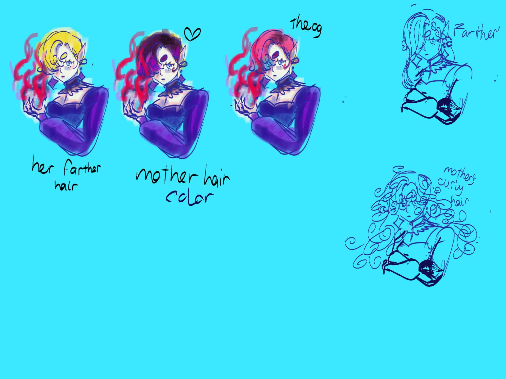
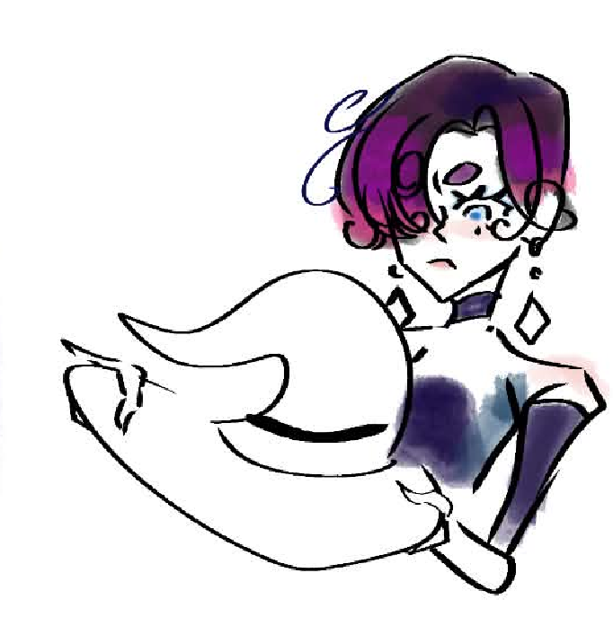
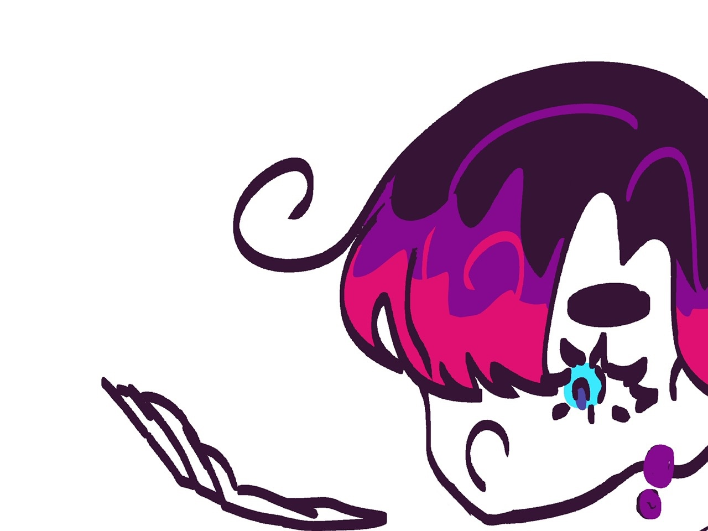
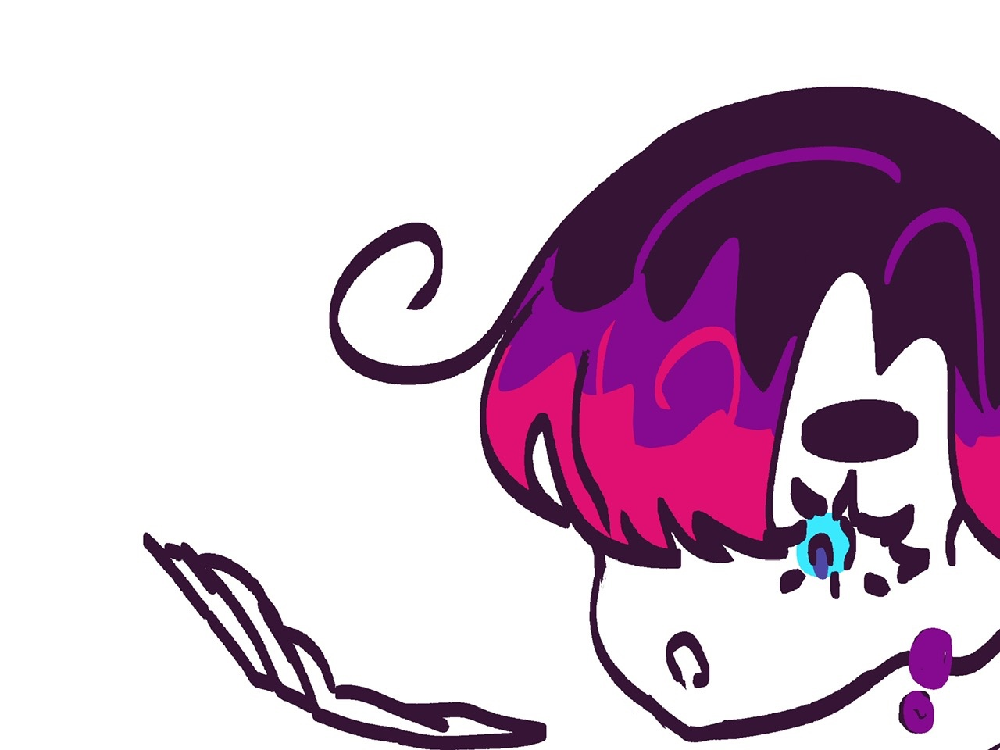
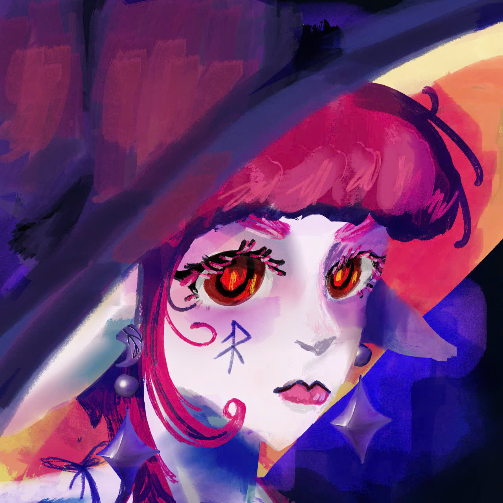

CHARACTER DESIGN











Faye the Witch
In a world populated by mages, knights, merfolk, elves, dwarves, and even deities and demons, there exists a young witch named Faye, who is just around 150 years old. Unlike traditional witches, she finds pointed hats annoying and unwieldy, so she opts for a hooded cloak instead. She also bears a tattoo on her left arm that signifies energy, as well as earrings crafted from magical stones. Faye was orphaned at the age of 10, with no knowledge of her parents' whereabouts. This world, however, does not care about her backstory, merely because she is a witch, the most hated of them all. Witches are seen as dangerous and evil, so after being found out about her true nature, she was forced to flee into the depths of a forest, where her powers made it effortless to take control and establish her dominion there and seek refuge. Faye's ability is the creation of powers, and blessing them to those who manage to track her down deep in the woods as a bargaining tool. However, these blessings can still easily backfire and turn into a curse, bringing about either fortune or ruin. Along with that, she frequently uses fire magic, as she believes it represents both the power she wields and the hope she holds for her life.
Techniques
I used Procreate to create this character design. The process involved sketching the character, refining the details, and then adding color and shading to bring Faye to life. I focused on creating a unique and memorable design that reflects her personality and backstory, while also ensuring that the magical elements of her character are visually striking.